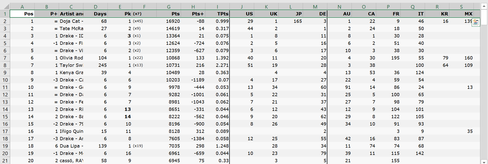
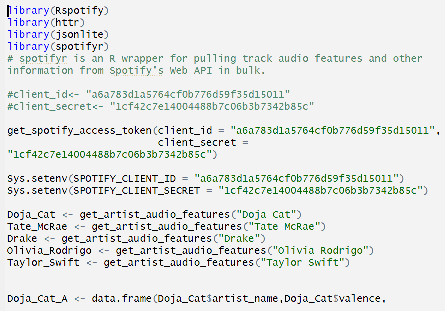
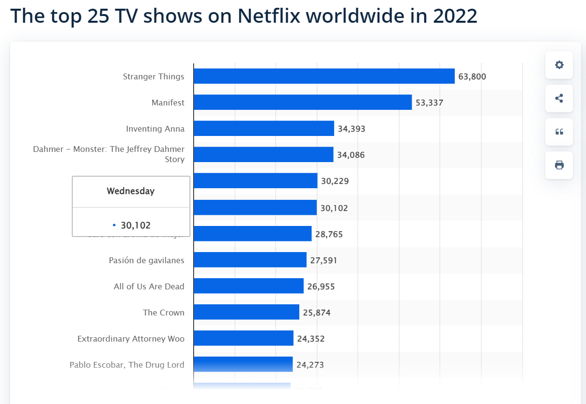
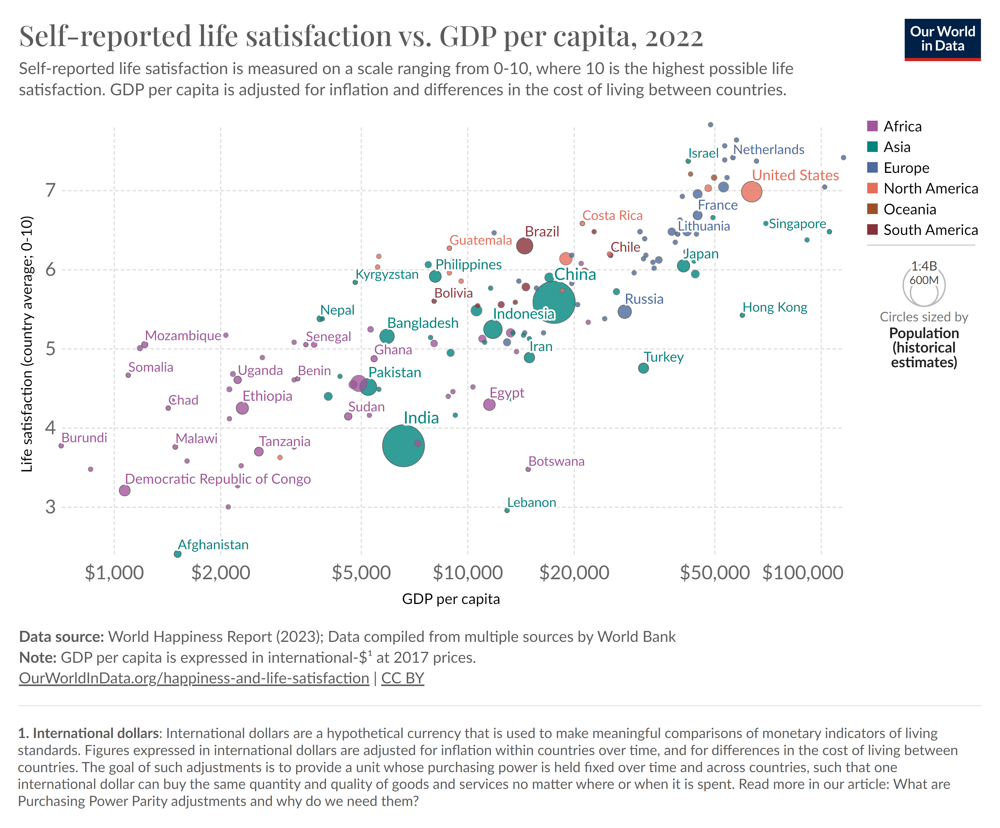
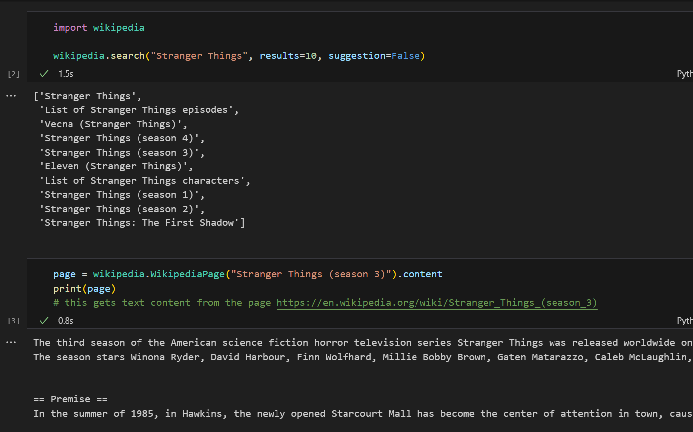

Data Gathering
The data I gathered to examine how the sentiments of current music and media coincide with the general happiness levels of different countries consists of text data, qualitative record data, and quantitative record data. The data comes from five different main sources, two of which are directly from website API (Application Programming Interface) sources. As an overview of the data sources:
- Apple Music International Rankings: Displays the Apple Music rankings for the top international songs in October 2023.
- Spotify: Contains variables that give a summary of different aspects of an artist’s various songs and albums over the years
- Top Netflix TV Shows in 2022: Consists of the top television shows worldwide on Netflix’s streaming platform.
- GDP vs. Happiness: This data explores the various levels of happiness and the Gross Domestic Product (GDP) per capita spanning different years for each country.
- Wikipedia: Contains text data from specific WIkipedia topic pages.
Apple Music
One of my goals for this project was to get a large dataset representing the current top rated songs in various countries. After searching a bit, I was able to discover Kworb’s website filled with real- time data on how Apple Music’s international listeners are ranking songs. Below is a picture of the raw data, which shows the artist, their song, their song’s ranking in different countries, the duration of their ranking position, and the amounts of points accumulated that verify their ranking position.

Spotify API
My Spotify content required authorization to access. At the very bottom of both my .R and .rmd files in my “Rcode” folder under my “websitebackupcode” folder, you will find how I set up my data collection for my Spotify dataset. I first submitted a registering application on Spotify’s API website. Once receiving my Client ID key and my Client Secret key, I used the keys to request a Spotify access token. This gave me access to the artist and corresponding song information available in Spotify’s Web API.
I wanted to gain insights into the first five artists at the top of the ranking for international songs from Apple Music. So, I requested Spotify information on Doja Cat, Tate McRae, Drake, Olivia Rodrigo, and Taylor Swift. The request yielded information on each song’s name, artist, valence, danceability, energy, loudness, speechiness, acousticness, liveness, tempo, album, and album release year. Which can be found here. As a brief overview:
- Valence: A metric of musical positivity.
- Danceability
- Energy: A metric of , loudness, and noise in a song.
- Loudness: A metric for the loudness; measured in decibels.
- Speechiness: A metric for the presence of speech- adjacent aspects in a recording.
- Acousticness: A metric denoting how acoustic the song was.
- Liveness: A metric concerning the level of an audience presence in the recording.
- Tempo: A metric of the estimated tempo of each song.
Right below this, is a snapshot of me using my Client ID key and Client Secret key to request API data access.

Netflix
One of my other goals for this project was to find data that represents the most watched television shows on a specific streaming platform in the past year. I was able to come across Statista’s arsenal. Statista provided data on a survey done by Flix Patrol, which captured the most watched Netflix television shows internationally as of December 2022. The dataset was modest; only consisting of the television shows in order of ranking and their corresponding points that justify their ranking. As stated on Statista, and clarified here, the points system is designed to be, “always based on the popularity ranking coming directly from the streaming platforms” ( (n.d.)). The total scores are an accumulation of points that fit this breakdown:
- 10 points for the #1 television show
- 9 points for the #2 television show . . .
- 1 point for the #10 television show
Below this is a picture of the original histogram visual of data provided by Statista, (Patrol and 3 (2023)).

GDP vs Self- Reported Life Satisfaction
The anchor connecting my music and media streaming platforms’ data is a dataset that would reflect some sort of emotional status of many different countries. Luckily, I discovered Our World in Data, which had a plethora of data reflecting interesting societal topics– including the relationship of subjective personal satisfaction and the origin country’s Gross Domestic Product (GDP) per capita. Our World in Data allowed me to easily download the dataset directly from their website. The dataset contains 3 variables:
- The population for each country at different years up until the end of 2022
- The GDP per capita in international dollars (a normalized currency they used for comparison); this dataset borrowed statistics from 2017
- The country average of life satisfaction. The scale used is the Cantril Ladder, which ranges from 0 to 10 (“0” being the lowest rating of life satisfaction and “10” being the highest rating of life satisfaction).
Below this is a visualization of the raw data provided by Our World in Data, which showcases the relationship of the countries’ GDP per capita and self- reported life satisfaction levels( (2022)).

Wikipedia API
My one other dataset source generated from an API call is the datasets of my Wikipedia API. The Python language has a wikipedia library that makes it easy for programmers to access any available wikipedia page content. For setting up my datasets from the wikipedia library, I imported the library to my workspace. I then requested the wikipedia page for all the television shows in the top five of my previously mentioned “Top TV shows on Netflix worldwide 2022” data. I was interested in using the plots for my analysis, so I only took the “Premise” portions of all of my wikipedia requests.
A description and example of the abilities of the wikipedia library for the Python language can be found here. Additionally, My entire data collection process for the Wikipedia API calls can be found in my “pythonApiBackup” folder inside my “websitebackupfolder” in my Github repository.
Below, is a screenshot of the beginning of my wikipedia API call for the highest ranked show from my “Top TV shows on Netflix worldwide 2022” dataset.
